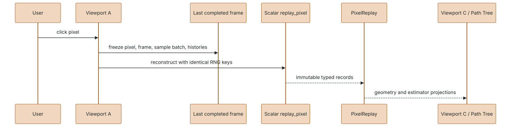
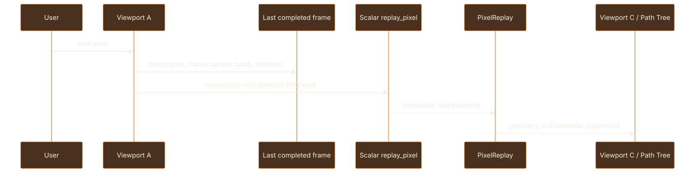

explanation
State, replay, and capture design
Generated from docs/design/state-replay-capture.md. Edit the canonical source, not this page.
T1 — chart: retained state is the observation boundary
Section titled “T1 — chart: retained state is the observation boundary”Rendering, interactive inspection, deterministic replay, and archival playback share one typed retained-state vocabulary. Beauty is only one projection of a frame.


{kind=link}
The same decision that drives radiance must drive inspection. Reconstructing estimator lineage from a PNG, or tracing extra rays for the UI, would create a second and potentially contradictory execution history.
T2 — map: frame state
Section titled “T2 — map: frame state”(frame-outputs {:identity {:frame u32 :spp positive-int :estimator EstimatorConfig :integrator IntegratorConfig} :buffers {semantic-name ndarray} :direct {:reservoirs ReservoirBuffers :spatial-source SpatialSource? :temporal-source-frame u32?} :path {:reservoirs PathReservoirBuffers :spatial-source PathSpatialSource? :temporal-source-frame u32? :replay-work {...}} :views {:radiance ndarray :direct-radiance ndarray :indirect-radiance ndarray}})ReservoirBuffers and PathReservoirBuffers are typed zero-copy views over scalar
planes in buffers. They provide structure without duplicating the storage that
becomes history or archive payload.
Direct retained state includes selected light geometry and WRS scalars. Path retained state also includes source/evaluation domains, contribution identity, light and MIS data, visibility endpoints, reconnection/origin surfaces, RNG identity, disclosed ray work, lobe topology, and selected index.
Source: outputs.py.
T2 — map: temporal history
Section titled “T2 — map: temporal history”History is a typed view of a complete preceding frame, not an unstructured cache.
(temporal-history {:scene-identity stable-id :frame preceding-u32 :config matching-direct-config :camera immutable-camera-snapshot :reservoirs previous-final-direct-soa :gbuffer {:primitive i32 :depth f64 :normal vec3 ...}})
(path-temporal-history {:scene-identity stable-id :frame preceding-u32 :config matching-path-config :camera immutable-camera-snapshot :reservoirs previous-final-path-soa :gbuffer {:primitive i32 :depth f64 :normal vec3 :emission rgb ...}})Acceptance requires the expected resolution/configuration, the immediately preceding frame, one-spp ReSTIR update semantics, successful reprojection, and primitive/depth/ normal agreement. Path history adds evaluation-domain and retained-origin checks. Rejection returns no direct source or a typed path-shift failure; it never guesses.
Array storage aliases the immutable FrameOutputs planes. Camera vectors are
snapshotted so later UI camera mutation cannot rewrite the meaning of history.
T2 — map: deterministic replay
Section titled “T2 — map: deterministic replay”Replay reconstructs only a selected pixel/sample through the scalar contracts, using the exact recorded frame identity and histories.
(pixel-replay {:selection {:pixel [x y] :frame f :sample-range [...]} :samples [{:primary-hit ... :direct {:candidates ... :reservoir-updates ... :visibility ...} :indirect {:vertices ... :contributions ...} :path-reuse {:fresh-updates ... :temporal-shifts ... :spatial-shifts ... :corrections ... :final-reservoir ...} :sample-radiance rgb} ...]})

{kind=link}
SampleRecord is the core introspection unit. PipelineReplay adds authored
(node_id, operator_id, sample_index) identities as a projection of the existing
payload; it does not re-run transport per graph node.
Source: restir_lab/debug/.
T2 — map: capture transaction
Section titled “T2 — map: capture transaction”Capture turns the same frame and replay vocabulary into a resumable artifact.
(capture-spec {:schema-version #{2 3} :scene named-scene :backend #{:scalar :wavefront :slang} :resolution [w h] :spp positive-int :exposure f64 :integrator IntegratorConfig :pipeline {:canonical-edn string :semantic-hash hash}? ; required in v3 :frames [{:camera ... :flags [[x y] ...] :hybrid-pairs [...]?} ...]})
(archive {:job-hash hash :state {:last-committed-frame n} :frames {n {:beauty [:exr :png] :buffers :exact-npz :previews :semantic-pngs :replay :pickle-free-typed-records :pipeline-replay :v3-only?}}})

{kind=link}
Frame directories commit atomically. Resume accepts only the same canonical job and reconstructs ReSTIR history/delay state from the final committed frame. A partially written temporary frame is never promoted to source history.
Capture v2 remains readable. V3 adds a canonical embedded graph, semantic hash, and graph-keyed replay while retaining the same core frame/replay data. A v3 graph and integrator must agree; the loader rejects inconsistency rather than choosing one.
Source: restir_lab/capture/ and
capture.py.
T3 — territory: persistence rules
Section titled “T3 — territory: persistence rules”| State | Retained in memory | Archived | Resume source | Mutable by observer |
|---|---|---|---|---|
| beauty/radiance planes | yes | EXR/PNG + exact buffers as applicable | no | no |
| direct/path reservoir SoA | yes | exact NPZ | yes | no |
| primary G-buffer | yes | exact NPZ | yes | no |
| spatial ping sources | during update/frame | derivable from exact retained stage where specified | no cross-frame use | no |
| replay-v2 flagged records | selected pixels | typed pickle-free codec | playback only | no |
| canonical v3 pipeline | graph session | embedded EDN + hash | yes | read-only in archive |
| graph delay cells | session | reconstructed from committed frame | yes | only via graph transaction |
Codecs are explicit and pickle-free. A new retained field requires a version-aware encoding decision, a default or migration story for older archives, round-trip tests, and playback behavior before it is considered part of the observation contract.
Invalidation and reset rules
Section titled “Invalidation and reset rules”Reset progressive accumulation and incompatible histories when scene semantics, camera projection, resolution, backend-relevant integrator configuration, or graph render semantics change. Do not reset transport for layout-only graph edits or display- only controls such as tonemapping/exposure when scene-linear accumulation is unchanged.
Camera movement invalidates progressive accumulation but does not blindly discard ReSTIR history: the typed temporal validator may reproject and accept compatible surfaces. Capture resume is stricter—it reconstructs the exact sequential state encoded by the job and last committed frame.
Observer and archive failure modes
Section titled “Observer and archive failure modes”- Heisenbug replay: recorder calls visibility or sampling again. Fix by recording already-computed decisions and asserting ray counts with recording on/off.
- Mutable history alias: UI changes camera arrays after a frame. Snapshot camera values at history construction.
- Half-committed resume: archive state advances before all frame assets exist. Use temporary directory plus atomic rename, then advance state.
- Schema drift: adding an NPZ plane without a version/default breaks old playback. Extend codecs and compatibility tests together.
- Graph/CLI disagreement: v3 embeds a graph that lowers to a different integrator. Reject at load time.
- Recooking playback: opening an archive invokes a renderer and produces new state. Playback must remain backend-free and read-only.
Verification expectations
Section titled “Verification expectations”- Round-trip exact scalar planes and typed records without pickle.
- Open capture-v2 after every v3 evolution.
- Interrupt a capture before commit and prove resume ignores the partial frame.
- Reject job-hash, graph-hash, scene, resolution, and config mismatches.
- Compare live replay and archived replay for the same flagged sample.
- Assert recorder enablement does not change output, RNG counters, or ray work.
- Exercise graph delay seeding and the first post-resume temporal update.
MIT licensed · Documentation structure follows Diátaxis · Third-party course material is linked, not redistributed.